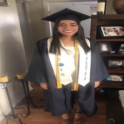

Jocelyn Martinez
My name is Jocelyn Martinez and I am a current student at the University of California, Riverside. I am currently in my second year pursuing an English major. With this major I plan on using it to obtain a career in teaching. I want to become a teacher in order to make an impact on the future generation who will soon be the one's leading us into a brighter future.
As a current student at University of California, Riverside I am taking two computer science classes, an entomology and geology class in order to fulfill my breadth requirements and be one step closer toward graduating. Even though they are classes that are not related to my major I still find them very interesting and I feel that they have taught me various information that I will always carry with me into the future. I hope that my understanding of these subjects does not stop after the winter quarter ends and that I further my mastery in these classes because it is important to be well-informed about a variety of subjects and not just one.
I have decided to major in English because it was always a subject that I was very passionate about throughout my educational career. I enjoy everything the subject encompasses such as, analyzing a variety of texts like poems, plays, articles, etc. because it allows one to be creative with their interpretations of the text. Furthermore, I also enjoy writing essays because it permits one to express and formulate their ideas in an academic setting. It also helps with improving one’s grammar and diction skills.
In order to help me prepare for this career I have volunteered as a teacher assistant for an English teacher in my high school. This volunteer experience has assisted me with being able to properly grade student’s papers and projects fairly, have an established understanding of time management, and how to correctly communicate with students. It has overall benefitted me because it gave me some insight to the realities of being a teacher.
Besides being a teacher assistant I was also a tutor for ninth graders. Like my experience as a teacher assistant, being a teacher as helped me with successfully assisting students to comprehend the content that they did understand previously.
I have also applied to become an resident advisor here at the University of California, Riverside in hopes that it will further assist me to develop skills that will be very advantageous for me as a teacher. For example, being a resident advisor requires one to have a lot of initiative due to the various responsibilities that come with being a resident advisor such as catering to the needs of the residents when an issue arises. I can apply this to my career in teaching because as a teacher one will have to have proper leadership skills and be able to lead a class full of various students to ensure they are receiving a quality education that every student deserves.
Experience
Student Tutor
• Guided students with comprehending the content in small groups or one on one
Teaching Assistant
• Provided aid to teachers with administrative work such as grading papers and projects
• Tutored students on the assigned material
Education
UC Riverside
Portfolio
